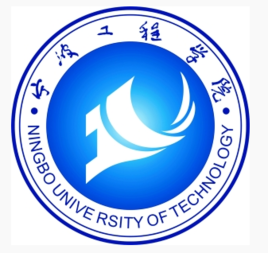

阿基伍专用
ajiwu队
“任何体育项目，任何球队，如果整个团队没有处在同一页面上，没有一致的目标，那么就肯定不会取得成功。”哈登在接受采访时坦言道。“这就是我们目前试图做出改变的主要方向，休赛期我们引进了几位新球员，希望我们能将他们尽快融合起来，打造一支出色的团队。” “一整个夏天，我都会在回想上赛季的事，这种感觉就像嘴里充满了苦涩。我非常希望尽快回到球场，七月中旬在拉斯维加斯以及上个月在迈阿密，我都组织了球员进行训练。毫无疑问，如果能在场下表现出色，那么自然而然的，就可以在场上表现的更出色。”哈登继续说道。 “和我的队友们一起去听音乐会，一起吃饭，大家彼此之间变得更团结了。在我看来，通过一整个夏天，我们变得更亲近了。”看起来，哈登很满意球队目前的化学反应。 “至于我，我在今年夏天一直都在训练，没有懈怠。上赛季我们表现的太糟糕了，令人失望，我不希望连续两个赛季都经历失败。因此我一直泡在健身房里，尽可能让我的身体与精神，调整到最佳状态。” 当地时间本周六，火箭就得为新赛季做准备了，接踵而至的便是训练营的开始。“这支球队从上到下，都期待着周六的到来，我们将要开启一段全新的旅程。训练营很漫长，而对于你来说，即使已经进入到职业生涯的第8个赛季，但只要你有一个更大的目标，且每一位队友都与你目标一致，那么仍能够找到新秀时的那种饥渴感。” 最后哈登还表示，球队应该尽快与莫蒂埃尤纳斯续约，这位立陶宛球员与火箭的续约谈判进行的一直不太顺利，而莫蒂埃尤纳斯的经纪人更是直言，莫雷缺乏诚意。 “尽快搞定莫蒂埃尤纳斯的合同，然后让他与我们一起训练，这是很重要的。”哈登最后总结道。 （杨威利）